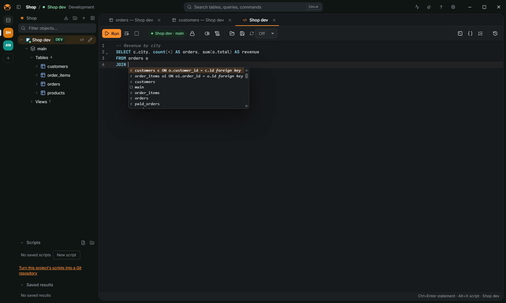
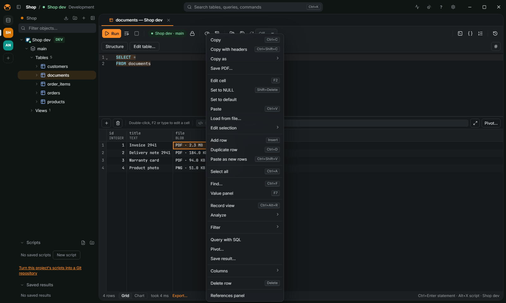

Docs / Run queries and read results
Run queries and read results

Run a statement
- Double-click a connection (or a table) to open a SQL editor.
- Type a statement.
Ctrl+Spacecompletes keywords, tables and columns;JOINoffers the related tables from the foreign keys. - Press
Ctrl+Enterto run the statement under the cursor (or the selection), orAlt+Xto run the whole script.Ctrl+\runs into a new result tab. Ctrl+.cancels a statement that is running.
Statements end at a ;, or at a blank line before a word that starts a new one. When a statement fails, the error is pointed out in the text and the error panel offers Go to the error. Ctrl+Shift+F formats the script; Ctrl+S saves it as a .sql file.
Parameters and variables
:id and ? in a statement, and ${name} variables, are asked in a dialog before the run and kept in a Variables panel. A ${name} value goes into the SQL as it is, so a statement with variables is checked again filled in (see Safety).
Read the results
- The grid reads rows a page at a time. Click a column header to sort: it writes the
ORDER BYin the editor and runs again; a second click reverses it, a third puts back the query's own. - Open a table from the navigator to browse it; a
WHEREtyped in the editor filters it. F7opens the value panel: long text, JSON and XML formatted, hex and images from binary columns.- A cell that holds a file (a PDF, an image, a ZIP and others, recognized by its bytes) shows its type and size, such as
PDF · 2.3 MB. The grid menu offers Save PDF… (or the file's type) and, on several cells of a column, Save N files to a folder…. The value panel has the same button. A text cell that holds a file (adata:URL, base64 or hex) has no label in the grid, which would mean reading every text cell to tell: the grid menu and the value panel show it, for the cells you select. Ctrl+Ffinds in the loaded rows;Ctrl+Shift+Ccopies the selection with headers.- A result can switch from the grid to a chart from the status bar.

Understand a slow query
Press Ctrl+Shift+E on a statement to see its plan. See FEATURES.md.
More
Saved scripts, snippets, history, vim mode, running a script on several connections, the query builder and data analysis are in FEATURES.md. The result grid is in FEATURES.md.